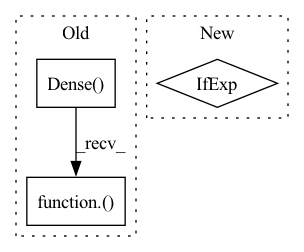

Pattern ID :10279

Before Change
nn = keras.layers.GlobalAveragePooling2D(name="avg_pool")(nn)
if drop_rate > 0:
nn = keras.layers.Dropout(drop_rate, name="head_drop")(nn)
nn = keras.layers.Dense(num_classes, dtype="float32", activation=classifier_activation, name="predictions")(nn)
model = keras.models.Model(inputs, nn, name=model_name)
return model
After Change
"attn_params": attn_params[id] if isinstance(attn_params, (list, tuple)) else attn_params,
"se_ratio": se_ratio[id] if isinstance(se_ratio, (list, tuple)) else se_ratio,
"use_eca": use_eca[id] if isinstance(use_eca, (list, tuple)) else use_eca,
"groups": groups[id] if isinstance(groups, (list, tuple)) else groups,
}
cur_expansion = expansion[id] if isinstance(expansion, (list, tuple)) else expansion
nn = aot_stack(
In pattern: SUPERPATTERN
Frequency: 3
Non-data size: 3
Instances
Fragment ID: 36221137
Project Name: leondgarse/keras_cv_attention_models
Commit Name: a6b256994deba19f65ec593111c13c3744960557
Time: 2021-10-13
Author: leondgarse@gmail.com
File Name: keras_cv_attention_models/aotnet/aotnet.py
M Class Name: AnonimousClass
N Class Name: AnonimousClass
M Method Name: AotNet(29)
N Method Name: AotNet(24)
M Parent Class:
N Parent Class:
M File Name: keras_cv_attention_models/aotnet/aotnet.py
N File Name: keras_cv_attention_models/aotnet/aotnet.py
M Start Line: 169
M End Line: 226
N Start Line: 212
N End Line: 271
'>
Before Change
// attn_query = [batch, num_heads, hh, ww, query_block * query_block, key_dim]
// pos_query = [batch, num_heads * hh * ww, query_block, query_block, key_dim]
query = inputs if strides == 1 else inputs[:, ::strides, ::strides, :]
query = keras.layers.Dense(emb_dim, use_bias=False, name=name and name + "query")(query) * qk_scale
// print(f">>>> {inputs.shape = }, {query.shape = }, {final_out_shape = }, {strides = }")
// attn_query = rearrange(query, "B (h hb) (w wb) (hd c) -> B hd h w (hb wb) c", hb=query_block, wb=query_block, hd=num_heads)
// pos_query = rearrange(attn_query, "B hd h w (hb wb) c -> B (hd h w) hb wb c", hb=query_block, wb=query_block)
After Change
inputs, num_heads=4, key_dim=0, block_size=2, halo_size=1, strides=1, out_shape=None, out_weight=True, out_bias=False, attn_dropout=0, name=None
):
_, hh, ww, cc = inputs.shape
key_dim = key_dim if key_dim > 0 else cc // num_heads
qk_scale = 1.0 / tf.math.sqrt(tf.cast(key_dim, inputs.dtype))
out_shape = cc if out_shape is None else out_shape
emb_dim = num_heads * key_dim
'>
Fragment ID: 36221140
Project Name: leondgarse/keras_cv_attention_models
Commit Name: 05af42a74bfe6c38e41e8155780ac9e3f4864370
Time: 2021-09-30
Author: leondgarse@gmail.com
File Name: keras_cv_attention_models/halonet/halonet.py
M Class Name: AnonimousClass
N Class Name: AnonimousClass
M Method Name: halo_attention(11)
N Method Name: halo_attention(11)
M Parent Class:
N Parent Class:
M File Name: keras_cv_attention_models/halonet/halonet.py
N File Name: keras_cv_attention_models/halonet/halonet.py
M Start Line: 11
M End Line: 33
N Start Line: 24
N End Line: 45
'>
Before Change
if out_weight:
// [batch, cls_token + hh * ww, num_heads * key_dim] * [num_heads * key_dim, out] --> [batch, cls_token + hh * ww, out]
attention_output = layers.Dense(emded_dim, use_bias=out_bias, name=name and name + "output")(attention_output)
return attention_output
def attention_mlp_block(inputs, embed_dim, gamma_init_value=0.1, mlp_ratio=4, drop_rate=0, activation="gelu", attn_params={}, name=""):
After Change
value = functional.reshape(value, [-1, value.shape[1], num_heads, key_dim])
value = functional.transpose(value, [0, 2, 1, 3])
pos_emb = MultiHeadRelativePositionalEmbedding(attn_height=attn_height, name=name and name + "pos_emb") if use_pos_emb else None
output_shape = [-1, bb, emded_dim]
return scaled_dot_product_attention(query, key, value, output_shape, pos_emb, out_weight, out_bias, dropout=attn_dropout, name=name)
'>
Fragment ID: 36221141
Project Name: leondgarse/keras_cv_attention_models
Commit Name: c870bf2e8d3e6b8b0e969d5468d550085414c0cd
Time: 2023-02-05
Author: leondgarse@gmail.com
File Name: keras_cv_attention_models/beit/beit.py
M Class Name: AnonimousClass
N Class Name: AnonimousClass
M Method Name: attention_block(11)
N Method Name: attention_block(11)
M Parent Class:
N Parent Class:
M File Name: keras_cv_attention_models/beit/beit.py
N File Name: keras_cv_attention_models/beit/beit.py
M Start Line: 151
M End Line: 199
N Start Line: 179
N End Line: 204